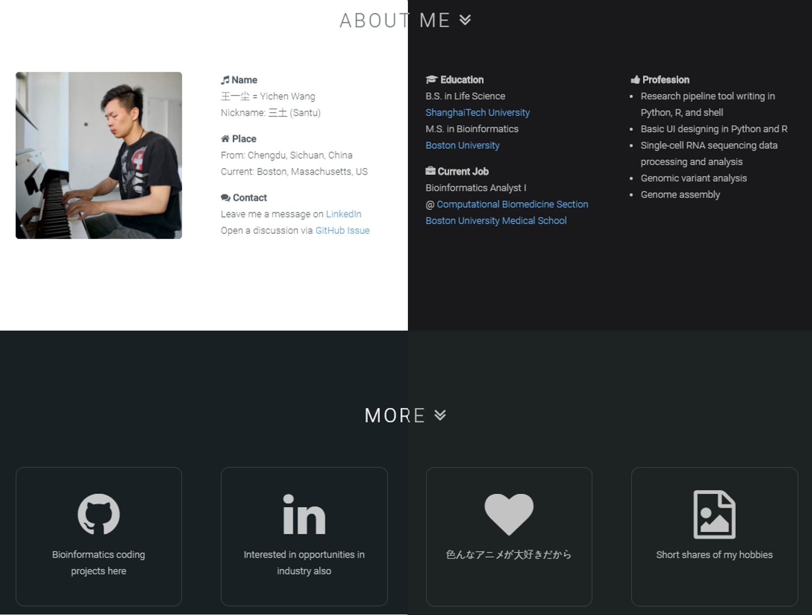

Yichen's Coding Notes
Some experience and complains ;D
Simple Way to Enable Dark Mode Theme
Since the start of using my iPhone, I have found the "dark mode" feature of iOS has been really user friendly. However, this is not a feature that works with all websites because developers all have their detailed color schemes, and the OS is not going to change the prescribed themes by itself. Therefore, if we want our own sites to have the same feature, then it is our task to have a dark theme prepared and make it accessible at the best timing.
I have seen three popular strategies so far:
- Show a small button and embed some functions within to switch between the themes.
- Detect the dark/light status of the requesting device and keep the theme consistant.
- Automatically display the correct theme depending on local time. (i.e. If in the evening, dark)
Let's skip the first one because more user operations, less user friendly.
Detection of Device Dark/Light Theme
This can be one of the easiest questions that you can find an answer from "stackoverflow". I recommend this thread to have a look. Two simple ways in conclusion:
In CSS, device preference is detected by prefers-color-scheme.
@media (prefers-color-scheme: light) {
body { /* light styles */
background-color: white;
color: black;
}
}
@media (prefers-color-scheme: dark) {
body { /* dark styles */
background-color: black;
color: white;
}
}
In JavaScript, device preference is detected with window.matchMedia.
if (window.matchMedia && //See if "matchMedia" supported
window.matchMedia('(prefers-color-scheme: dark)').matches) {
// Do some thing to start dark mode
}
The first CSS solution works perfectly if only CSS style changes are needed. In case I might also want any other complex operations bundled with the theme change, I implemented my own dark theme with the JavaScript approach.
Switch to Dark Mode via JavaScript
My idea to implement this is to switch the active CSS setting to a different set when the condition above equals to true. So I've got a separate dark mode CSS only for colors, included in <head></head>. Then the key is how do these settings override the default theme, which is a light mode. After exploring some sites that have already had this feature working, that is likely to be implemented by strategy 2, I came up with my solution:
Leave the styles in
dark.csswith a tag attribute selector prefix (i.e. a condition), and add the special attribute to<html>tag so conditions are matched.
Example:
In JavaScript:
if (window.matchMedia &&
window.matchMedia('(prefers-color-scheme: dark)').matches) {
$("html").attr("color-scheme", "dark");
// "color-scheme" is not a standard attribute
}
In CSS:
body{
background: white;
color: black;
// plenty of other stuff ...
}
html[color-scheme='dark'] body{
background: black;
color: white;
}
As an effect, the output HTML should look like this when in light mode:
<html><body></body></html>
While if your device is in a dark mode, the loaded page will look like this:
<html color-scheme="dark"><body></body></html>
With example framework above, your site can already be loaded with a dark theme if your device is already dark.

However, it is still not perfect. WHAT IF, the system theme is changed while you are browsing the site? The answer is, with the example above, the theme of your site won't be synchronized with the system in time. You need to add a event listener that monitors the changes in the device theme, to the JS code:
var darkModeMediaQuery = window.matchMedia('(prefers-color-scheme: dark)');
darkModeMediaQuery.addListener(function(e) {
if (e.matches) {
$("html").attr("color-scheme", "dark");
} else {
$("html").removeAttr("color-scheme");
}
});
Now you can test on your Windows machine or iOS device: With your website open, switch between light and dark theme in system settings.
Finally, have fun selecting colors!
Jul, 15, 2020